لوحة التحكم كلاود كاشير هي مركزك الرئيسي لإدارة جميع جوانب عمليات مطعمك من السحابة.
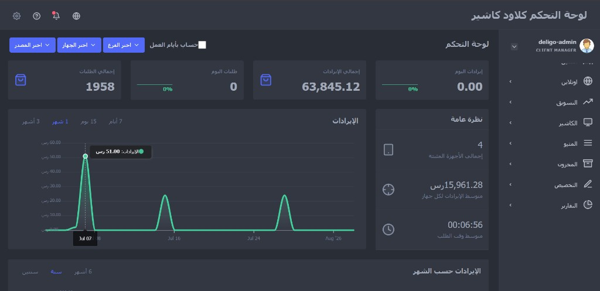
نظرة عامة على مساحة عمل لوحة التحكم كلاود كاشير.
نظرة عامة
تتكون من الأقسام التالية التي يمكن الوصول إليها من الشريط الجانبي: لوحة التحكم، المطبخ، العميل، أونلاين، التسويق، الكاشير، المنيو، المخزون، التخصيص، والتقارير.
تسجيل الدخول
افتح صفحة تسجيل الدخول إلى Smart Kiosk Administration. تعرض الشاشة العنوان "Welcome back!" مع عنوان فرعي يطلب منك إدخال اسم المستخدم وكلمة المرور للوصول إلى لوحة الإدارة.
املأ الحقلين كما يلي:
Email Address - أدخل اسم المستخدم أو البريد الإلكتروني المخصص لك
Password - أدخل كلمة المرور الآمنة الخاصة بك
يمكنك تحديد Remember me للبقاء مسجّل الدخول على هذا الجهاز. أكمل التحقق reCAPTCHA بتحديد مربع "I'm not a robot"، ثم انقر زر Log In الأزرق.
عند نجاح تسجيل الدخول، ستنتقل إلى لوحة تحكم Smart Restaurant Administration.
صفحة تسجيل الدخول للوصول إلى لوحة الإدارة.
تسجيل الخروج
لتسجيل الخروج، حدد ملفك الشخصي في أعلى الشريط الجانبي حيث يظهر اسمك وتسمية CLIENT MANAGER. انقر سهم القائمة المنسدلة الصغير بجانب اسمك. تظهر قائمة بثلاثة خيارات: تعديل الحساب، الدعم الفني، وتسجيل الخروج. انقر تسجيل الخروج لإنهاء جلستك.
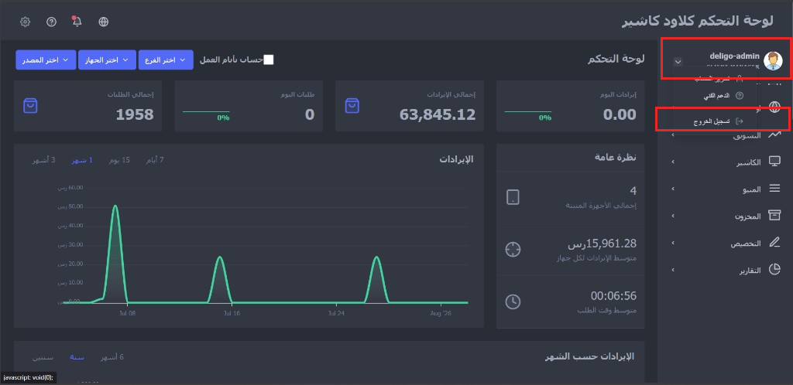
قائمة الملف الشخصي المنسدلة مع إجراء تسجيل الخروج.
لوحة التحكم هي أول شاشة تراها بعد تسجيل الدخول. تمنحك نظرة فورية على أداء عملك.
يحتوي الشريط العلوي على أزرار تصفية: اختر الفرع و اختر الجهاز و اختر المصدر، مع خيار حساب بأيام العمل، لتضييق البيانات المعروضة عبر لوحة التحكم بالكامل.
تحتوي منطقة المحتوى الرئيسية على ما يلي:
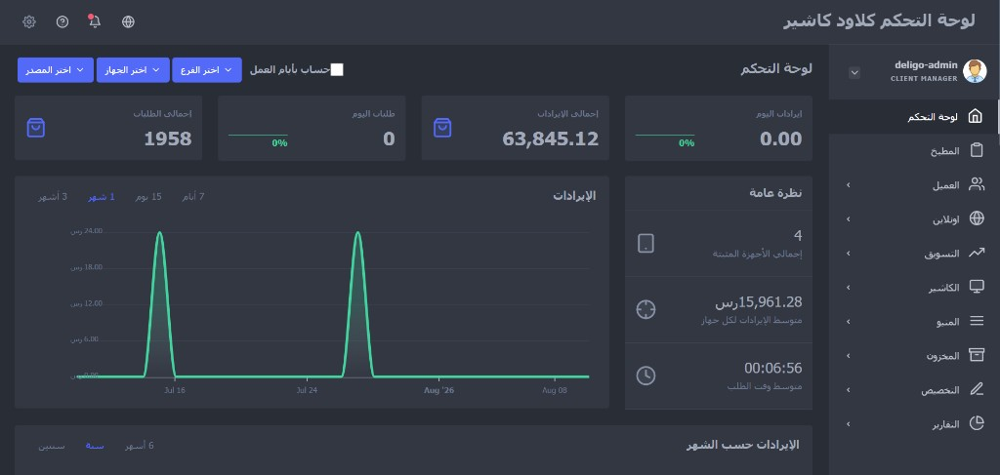
لوحة التحكم الرئيسية مع بطاقات مؤشرات الأداء والفلاتر ولوحات الملخص.
المنطقة
الوصف
بطاقات المؤشرات
أربع بطاقات تعرض إجمالي الطلبات و طلبات اليوم و إجمالي الإيرادات و إيرادات اليوم. تعرض كل بطاقة القيمة الحالية مع مؤشر اتجاه بالنسبة المئوية.
نظرة عامة
يعرض إجمالي الأجهزة المثبتة ومتوسط الإيرادات لكل جهاز بالريال السعودي، ومتوسط وقت الطلب بتنسيق HH:MM:SS.
الإيرادات
مخطط خطي يعرض الإيرادات عبر الزمن مع فلاتر مثل 7 أيام و 15 يوماً و 1 شهر و 3 أشهر.
الإيرادات حسب الشهر
مخطط ثانوي يعرض اتجاهات الإيرادات الشهرية مع فلاتر سنوية.
بالتمرير لأسفل تظهر مخططات إضافية تشمل الإيرادات حسب المنتجات كمخطط دائري، ومخطط شريطي للطلبات، والإيرادات حسب الفرع، ورسم مدد الطلبات. يوجد على الجانب جدول تفصيلي للطلبات يسرد المعاملات الأخيرة مع الفرع والمدة والإجمالي وزر عرض.
يتصل قسم المطبخ بتطبيق المطبخ الذي يعرض الطلبات المباشرة على شاشات المطبخ. من صفحة الإدارة يمكنك تشغيل تطبيق المطبخ وشاشة عرض العملاء لبرنامج المطبخ الذكي بعد اختيار الفرع والمصدر، ثم النقر على تشغيل أو تفعيل. تنظّم شاشة المطبخ الطلبات في أربع علامات تبويب في الأعلى: مقدَّم و نشط و معلَّق و السجل، مع شارة عدّ لكل منها.
تعرض كل بطاقة طلب رقم الطلب والعناصر مع خياراتها المحددة بالإنجليزية والعربية، وأربعة أزرار إجراءات في الأسفل: في الانتظار و معلَّق و طباعة و إلغاء. تعرض البطاقة أيضاً وقت الطلب وتاريخ الاستلام والحالة ومؤقت التأخير. تظهر قائمة اختر طاولة في الأعلى، مع ساعة مباشرة في الزاوية.
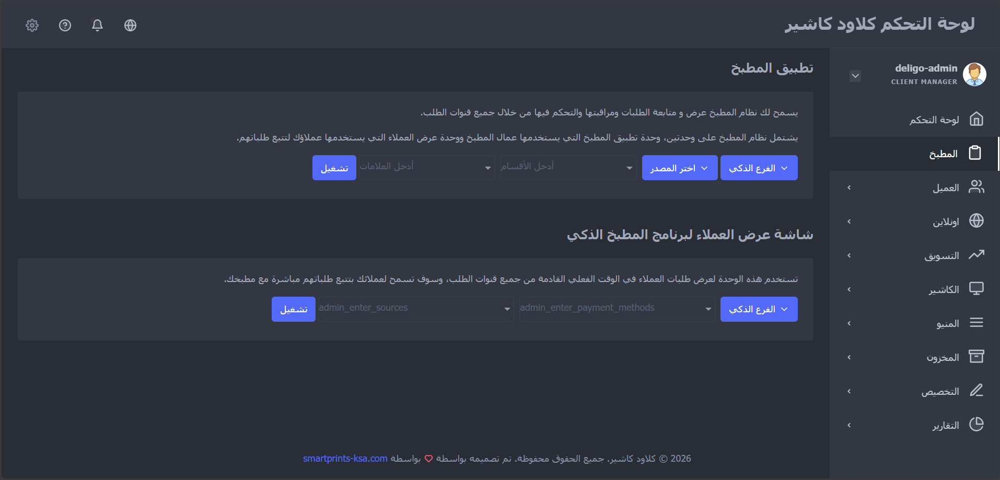
نقطة الدخول لقسم المطبخ داخل الإدارة.بطاقات طلبات المطبخ التفصيلية مع الإجراءات وتوقيت الحالة.
للحصول على دليل مخصص كامل لتطبيق المطبخ، راجع دليل مستخدم تطبيق المطبخ.
انتقل إلى أونلاين ← السائقين لإدارة سائقي التوصيل. يمكنك التصفية عبر اختر الحالة أو البحث باستخدام حقل بحث.
لإضافة سائق جديد، انقر + إضافة سائق. يحتوي نموذج إضافة سائق على الحقول التالية:
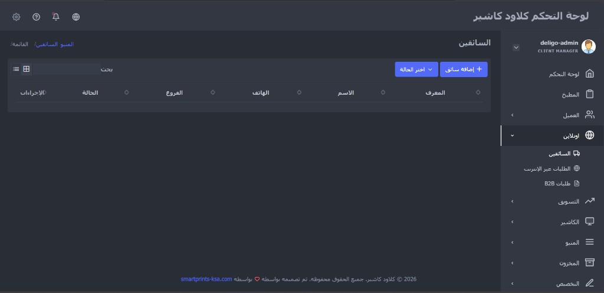
قائمة السائقين لإدارة موظفي التوصيل النشطين.
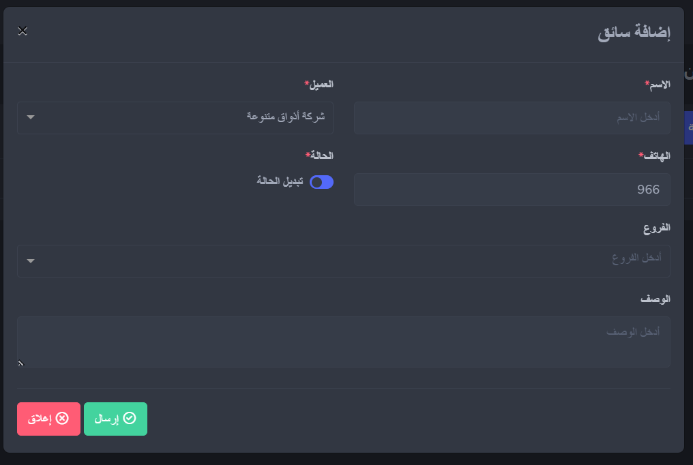
نموذج إضافة سائق مع تعيين الفرع وضوابط الحالة.
الحقل
التفاصيل
الاسم *
الاسم الكامل للسائق (مثل: أدخل الاسم)
العميل *
اختر الشركة المرتبطة من القائمة المنسدلة
الهاتف *
رقم اتصال السائق
الحالة *
مفتاح تبديل الحالة لتفعيل أو تعطيل السائق
الفروع
اختر الفرع أو الفروع التي يخدمها هذا السائق
الوصف
ملاحظات اختيارية عن السائق
أعمدة قائمة السائقين: المعرف و الاسم و الهاتف و الفروع و الحالة و الإجراءات.
انقر إرسال للحفظ، أو إغلاق للإلغاء.
6.2 الطلبات عبر الإنترنت
انتقل إلى أونلاين ← الطلبات عبر الإنترنت لمراقبة جميع الطلبات المقدَّمة عبر القنوات الأونلاين.
تعرض الصفحة شريط ملخص في الأعلى يشمل: عدد الطلبات و الإجمالي بدون الضريبة و ضريبة القيمة المضافة و الإجمالي. أسفل الملخص يمكنك التصفية عبر اختر الفرع و حدد السائق و حدد العميل و جميع الطلبات، مع خيار حساب بأيام العمل.
أعمدة الجدول: المعرف و الفرع و يوم العمل و تاريخ الطلب و تاريخ الاستلام و تاريخ الإرسال و الطاولة و الإجمالي و برنامج التشغيل و الحالة و الإجراءات.
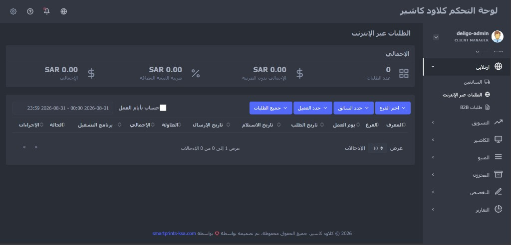
منطقة الطلبات عبر الإنترنت مع أدوات تصفية العملاء والطلبات.
6.3 طلبات B2B
انتقل إلى أونلاين ← طلبات B2B لمراقبة معاملات الشركات إلى الشركات.
تعرض الصفحة شريط ملخص في الأعلى يشمل: عدد الطلبات و الإجمالي بدون الضريبة و ضريبة القيمة المضافة و الإجمالي. أسفل الملخص يمكنك التصفية عبر اختر الفرع و حدد السائق و حدد العمل و جميع الطلبات، مع خيار حساب بأيام العمل.
أعمدة الجدول: المعرف و الفرع و عمل و تذكرة و يوم العمل و تاريخ الطلب و المدة و الوجبات الجاهزة و الإجمالي بدون الضريبة و ضريبة القيمة المضافة و الإجمالي و الحالة.
قسم المنيو مسؤول عن إدارة جميع المنتجات المباعة عبر أجهزتك. انتقل إلى المنيو في الشريط الجانبي للوصول إلى أقسامه الفرعية الخمسة: المنتجات و الأقسام و الخيارات و مجموعات الخيارات و مجموعات المنيو.
ابنِ قائمتك بهذا الترتيب: الأقسام أولاً، ثم مجموعات الخيارات، ثم الخيارات، ثم المنتجات. يعتمد كل مستوى على المستوى الذي فوقه.
7.1 الأقسام
انتقل إلى المنيو ← الأقسام. يمكنك التصفية عبر اختيار الحالة أو البحث باستخدام بحث. انقر إضافة فئة + لفتح نموذج إضافة فئة:
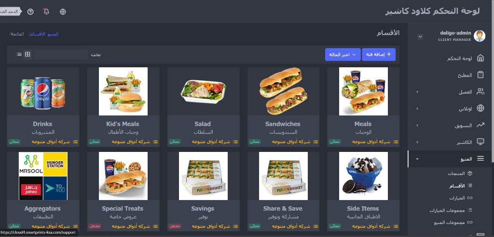
قائمة الأقسام قبل إنشاء فئة جديدة.
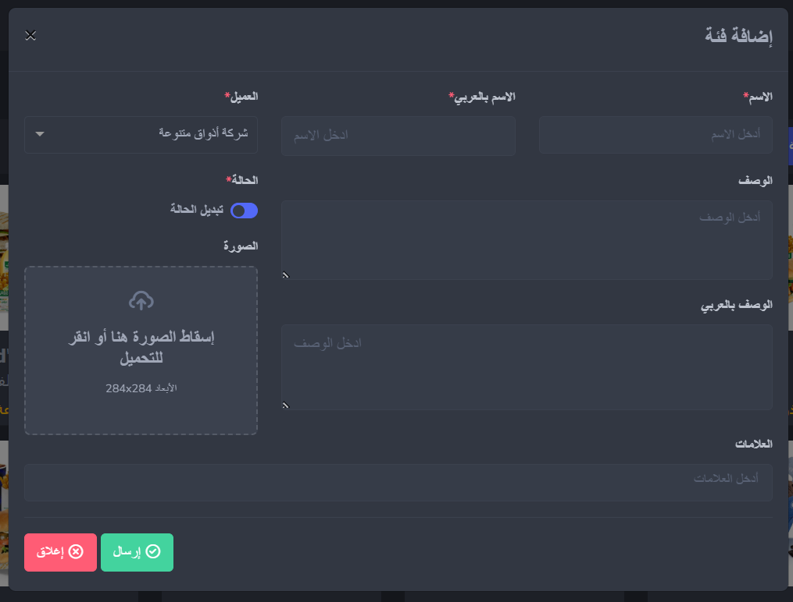
نموذج إضافة فئة بأسماء ثنائية اللغة ورفع صورة.
الحقل
التفاصيل
الاسم *
اسم الفئة بالإنجليزية (مثل Hot Coffee)
الاسم بالعربي *
اسم الفئة بالعربية (مثل قهوة ساخنة)
العميل *
اختر الشركة المرتبطة بهذه الفئة
الوصف
وصف اختياري بالإنجليزية
الوصف بالعربي
وصف اختياري بالعربية
الحالة *
مفتاح تبديل الحالة لتفعيل أو تعطيل الفئة (ممكن / معطل)
الصورة
أسقط الصورة هنا أو انقر للتحميل (الأبعاد 284×284)
العلامات
كلمات مفتاحية للبحث
انقر إرسال للحفظ، أو إغلاق للإلغاء.
7.2 المنتجات
انتقل إلى المنيو ← المنتجات. يمكنك التصفية عبر اختر الحالة و حدد القسم أو البحث باستخدام بحث. انقر + إضافة منتج لفتح نموذج إضافة منتج.
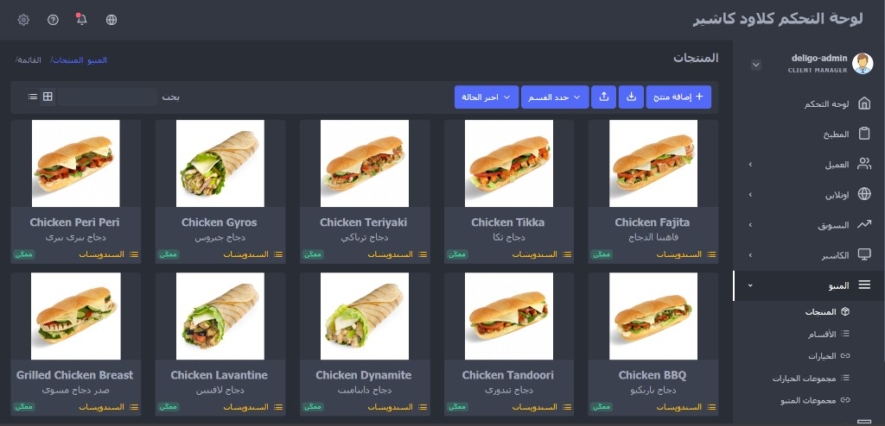
صفحة المنتجات لتصفح وإدارة كتالوج المنيو.
الحقل
التفاصيل
الاسم *
اسم المنتج بالإنجليزية (مثل Coffee Americano)
الاسم بالعربي *
اسم المنتج بالعربية
القسم *
اختر القسم الأب
السعر *
سعر البيع الأساسي
الكمية القصوى
الحد الأقصى للوحدات لكل طلب، أدخل 0 لعدم وجود حد
الحالة *
مفتاح للتفعيل أو التعطيل (ممكن / معطل)
الباركود
باركود فريد اختياري
المرجع
رقم مرجعي داخلي اختياري
الإجراءات
ربط إجراءات اختياري (مثل POS+ SKU)
العلامات
كلمات مفتاحية للبحث
البيع الإضافي *
فعّل إذا كان جزءاً من استراتيجية البيع الإضافي
العرض *
مفتاح للتحكم في الظهور على الأجهزة
متاح لفترة محدودة
فعّل للمنتجات المقيدة زمنياً
الوصف
وصف موجَّه للعميل بالإنجليزية
الوصف بالعربي
وصف موجَّه للعميل بالعربية
الصورة *
ارفع صورة المنتج
7.3 مجموعات الخيارات
تعرّف مجموعات الخيارات نوع التخصيص المتاح للمنتج. على سبيل المثال، تجمع مجموعة الحجم بين صغير ومتوسط وكبير. انتقل إلى المنيو ← مجموعات الخيارات. يمكنك التصفية عبر اختر الحالة أو البحث باستخدام بحث. انقر + إضافة خيار إضافة عائلة لفتح النموذج.
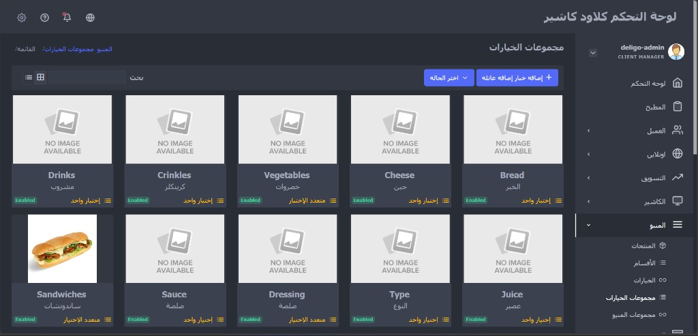
قائمة مجموعات الخيارات لتعريف مجموعات التخصيص.
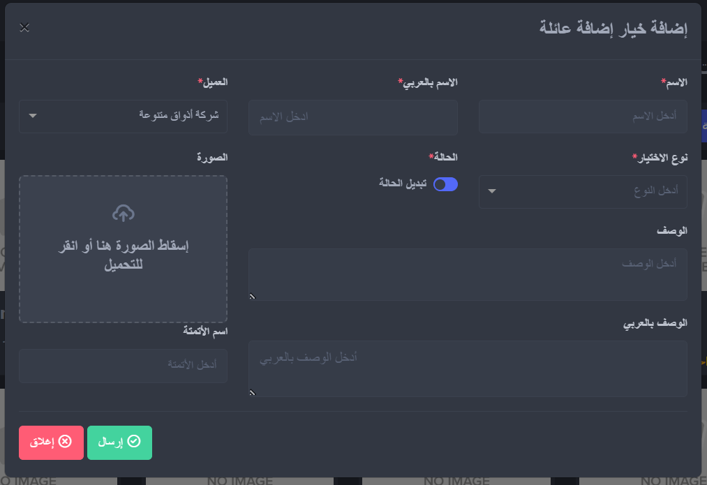
نموذج إضافة خيار إضافة عائلة لمجموعات الحجم أو النكهة أو الاختيار.
الحقل
التفاصيل
الاسم *
اسم مجموعة الخيارات بالإنجليزية (مثل Cold Cup Size)
الاسم بالعربي *
الاسم بالعربية
العميل *
اختر الشركة المرتبطة
نوع الاختيار *
اختر إختيار واحد أو متعدد الإختيار
الحالة *
مفتاح تبديل الحالة للتفعيل أو التعطيل
الوصف
وصف اختياري بالإنجليزية
الوصف بالعربي
وصف اختياري بالعربية
الصورة
أسقط الصورة هنا أو انقر للتحميل
اسم الأتمتة
معرّف أتمتة اختياري
انقر إرسال للحفظ، أو إغلاق للإلغاء.
7.4 الخيارات
انتقل إلى المنيو ← الخيارات. يمكنك التصفية عبر اختر الحالة و اختر العائلة أو البحث باستخدام بحث. انقر + إضافة خيار لفتح نموذج إضافة خيار.
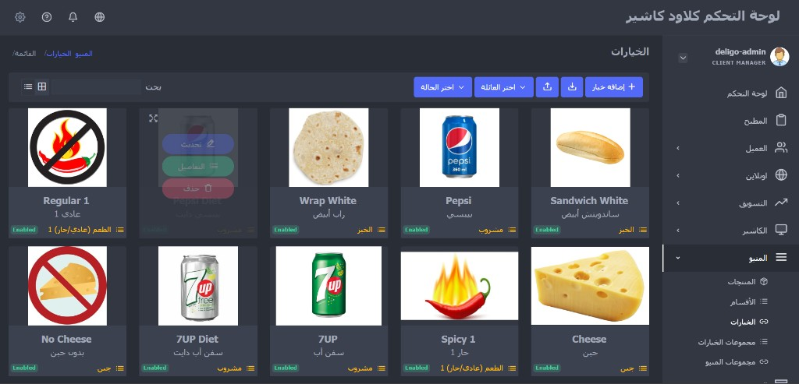
قائمة الخيارات المرتبطة بمجموعات الخيارات.
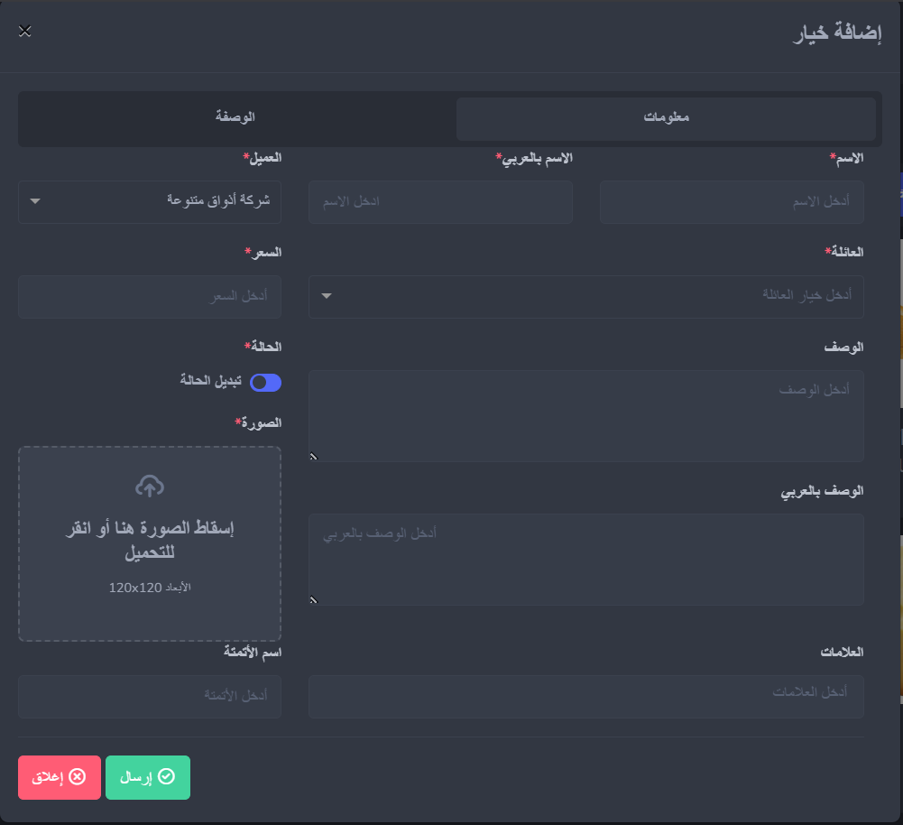
نموذج إضافة خيار لاختيار واحد قابل للتحديد.
يتضمن النموذج علامتي تبويب: معلومات و الوصف. من البطاقة يمكن أيضاً استخدام تحديث و التفاصيل و حذف.
الحقل
التفاصيل
الاسم *
اسم الخيار بالإنجليزية (مثل Medium M)
الاسم بالعربي *
اسم الخيار بالعربية (مثل متوسط M)
العميل *
اختر الشركة المرتبطة
العائلة *
اختر مجموعة الخيارات الأب
السعر *
رسوم إضافية، أدخل 0 إذا كان مجانياً
الحالة *
مفتاح تبديل الحالة للتفعيل أو التعطيل
الوصف
وصف اختياري بالإنجليزية
الوصف بالعربي
وصف اختياري بالعربية
الصورة *
أسقط الصورة هنا أو انقر للتحميل (الأبعاد 120×120)
العلامات
كلمات مفتاحية للبحث
اسم الأتمتة
معرّف أتمتة اختياري
انقر إرسال للحفظ، أو إغلاق للإلغاء.
ربط الخيارات بمنتج
افتح أي منتج موجود، ثم انتقل إلى علامة التبويب الخيارات داخل نموذج تحديث المنتج. استخدم + إضافة خيار لإرفاق خيارات بهذا المنتج.
تعيينات خيارات المنتج المرفقة بالفعل بمنتج.إرفاق خيار عائلة واختيار محدد بمنتج موجود.
الحقل
التفاصيل
Family Option
اختر العائلة التي ينتمي إليها هذا الخيار
Option *
اختر الخيار المحدد
Price *
تجاوز السعر لهذا الخيار على هذا المنتج تحديداً
Extra Price
رسوم إضافية فوق سعر الخيار الأساسي
Reference
مرجع داخلي اختياري
Actions
ارتباط إجراء اختياري
Barcode
باركود اختياري لمزيج المنتج-الخيار هذا
Status *
مفتاح للتفعيل أو التعطيل
Preselected *
مفتاح لتحديد هذا الخيار مسبقاً افتراضياً
Product Recipe
اربط هذا الخيار بوصفة إن وُجدت
7.5 مجموعات المنيو
انتقل إلى المنيو ← مجموعات المنيو. انقر + إضافة مجموعة منيو لفتح نموذج إضافة مجموعة منيو:
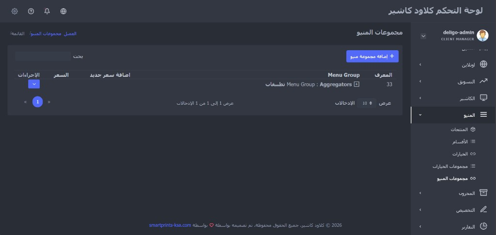
قائمة مجموعات المنيو للحزم المجمّعة أو مجموعات القوائم الخاصة.
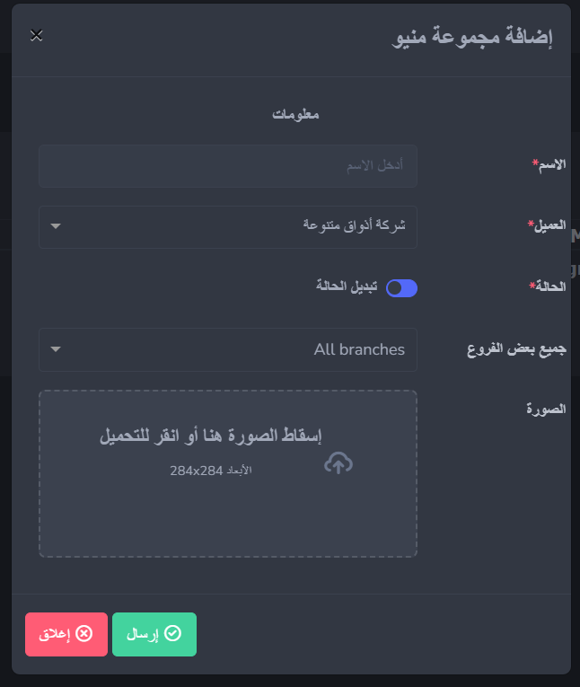
نموذج إضافة مجموعة منيو مع استهداف الفروع ورفع صورة.
أعمدة القائمة: المعرف و مجموعة المنيو و اضافة سعر جديد و السعر و الإجراءات.
الحقل
التفاصيل
الاسم *
اسم مجموعة المنيو
العميل *
اختر الشركة المرتبطة
الحالة *
مفتاح تبديل الحالة للتفعيل أو التعطيل
جميع بعض الفروع
اختر ما إذا كان ينطبق على All branches أو Some branches
انتقل إلى التخصيص في الشريط الجانبي. يحتوي قسم التخصيص على أربعة أقسام فرعية: المنتجات و الخيارات و خيار المنتج و ترتيب المنيو.
8.1 المنتجات
انتقل إلى التخصيص ← المنتجات. تحمل هذه الصفحة عنوان تخصيص المنتجات وتعرض جدولاً بأعمدة المعرف و الفرع و المنتج و السعر و الحالة و الإجراءات.
يمكنك التصفية عبر اختر الفرع و حدد القسم و اختر المنتج أو البحث باستخدام بحث. لإضافة تخصيص، انقر + إضافة تخصيص. يحتوي نموذج إضافة تخصيص على الحقول التالية:
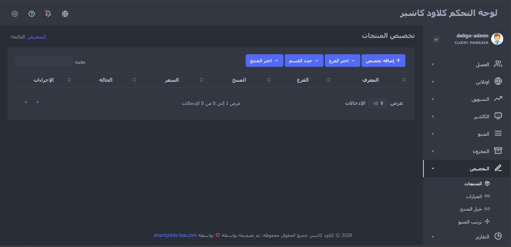
قائمة تخصيص المنتجات مع قواعد التسعير حسب الفرع.
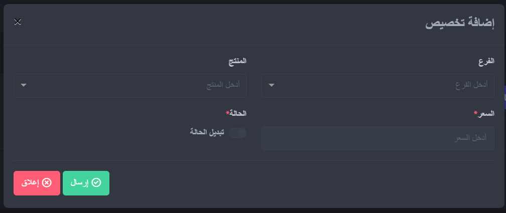
نموذج إضافة تخصيص لتجاوزات مستوى الفرع.
الحقل
التفاصيل
الفرع
اختر الفرع المستهدف
المنتج
اختر المنتج المراد تخصيصه
السعر *
السعر المخصص لهذا الفرع
الحالة *
مفتاح تبديل الحالة للتفعيل أو التعطيل
انقر إرسال للحفظ، أو إغلاق للإلغاء.
8.2 خيار المنتج
انتقل إلى التخصيص ← خيار المنتج. تحمل هذه الصفحة عنوان تخصيصات خيار المنتج وتعرض جدولاً بأعمدة المعرف و الفرع و المسح و الخيار و السعر و Extra السعر و الحالة و الإجراءات.
يمكنك التصفية عبر اختر الفرع و اختر المنتج و حدد الخيار. لإضافة تخصيص، انقر + إضافة تخصيص. يحتوي نموذج إضافة تخصيص على الحقول التالية:
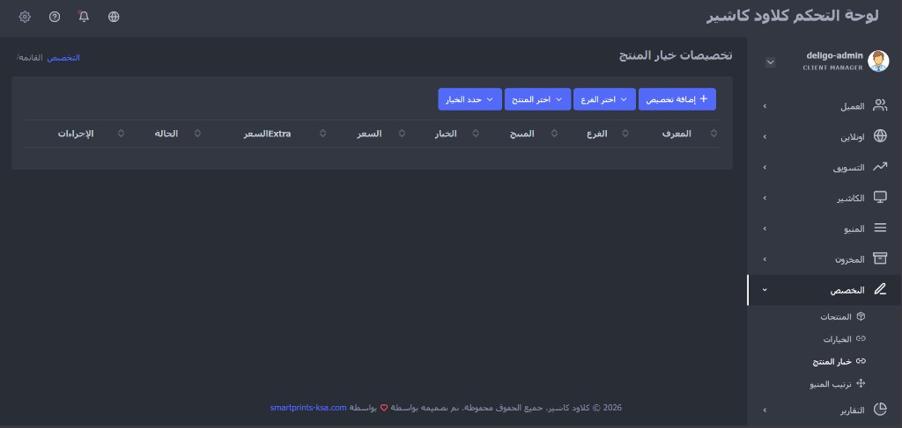
قائمة تخصيصات خيار المنتج لتسعير الخيارات وتغيير الحالة.
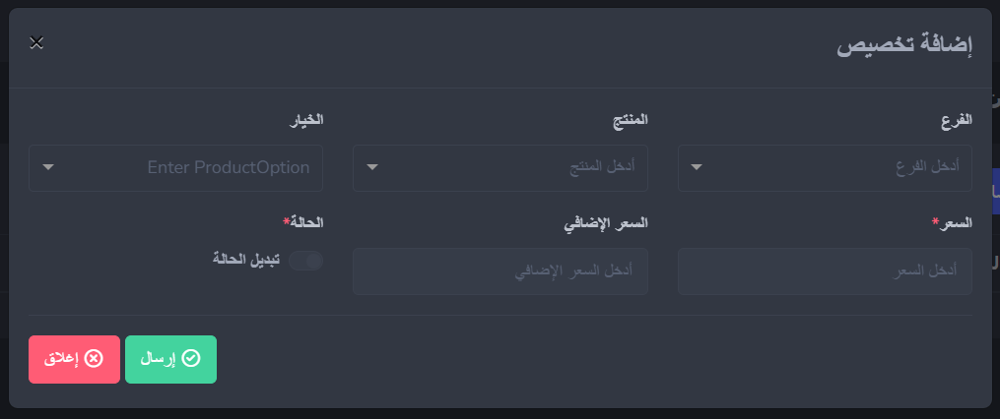
نموذج إضافة تخصيص لتسعير خيارات المنتج حسب الفرع.
الحقل
التفاصيل
الفرع
اختر الفرع المستهدف
المنتج
اختر المنتج المرتبط
الخيار
اختر خيار المنتج
السعر *
السعر المخصص
السعر الإضافي
سعر إضافي اختياري
الحالة *
مفتاح تبديل الحالة للتفعيل أو التعطيل
انقر إرسال للحفظ، أو إغلاق للإلغاء.
8.3 ترتيب المنيو
انتقل إلى التخصيص ← ترتيب المنيو. تحتوي الشاشة على ثلاث علامات تبويب في الأعلى: القسم/المنتج و مجموعات الخيارات/الخيارات و العروض/المجموعات.
تعرض علامة القسم/المنتج لوحة الأقسام ولوحة المنتجات. اختر قسماً من القائمة ليظهر منتجاته؛ حتى يتم الاختيار تظهر الرسالة يرجى اختيار فئة. استخدم أيقونات الأسهم في كل صف لإعادة ترتيب العناصر. تنعكس التغييرات فوراً عبر أجهزة الكiosk والقوائم.
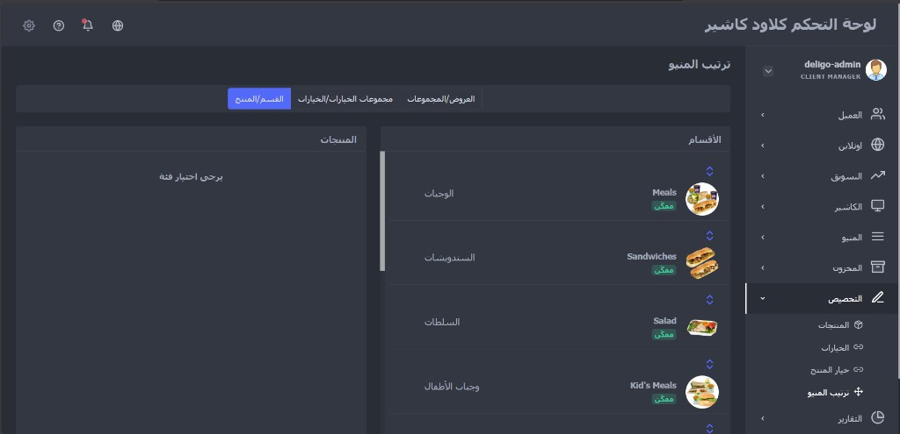
شاشة ترتيب المنيو لإعادة ترتيب الأقسام والمنتجات ومجموعات العروض.
تتطلب ميزة ترتيب المنيو اشتراكاً من نوع Pro أو Advanced.
انتقل إلى التقارير في الشريط الجانبي. يحتوي قسم التقارير على أربعة أقسام فرعية: الطلبات و طلبات الزكاة و مبيعات المنتجات و الرسوم البيانية.
10.1 الطلبات
انتقل إلى التقارير ← الطلبات. يعرض شريط الملخص في الأعلى: عدد الطلبات و الإجمالي بدون الضريبة و ضريبة القيمة المضافة و الإجمالي.
يمكنك التصفية عبر اختر الفرع و اختر الجهاز و اختر الحالة و اختر طريقة الدفع و اختر المصدر، مع خيار حساب بأيام العمل. يعرض منتقي نطاق التاريخ الفترة النشطة، ويتيح زر تصدير تنزيل البيانات المصفاة.
أعمدة الجدول: المعرف و الفرع و جهاز و Ticket و يوم العمل و تاريخ الطلب و الوجبات الجاهزة و الإجمالي بدون الضريبة و ضريبة القيمة المضافة و الإجمالي و نوع الدفع و الحالة و الإجراءات.
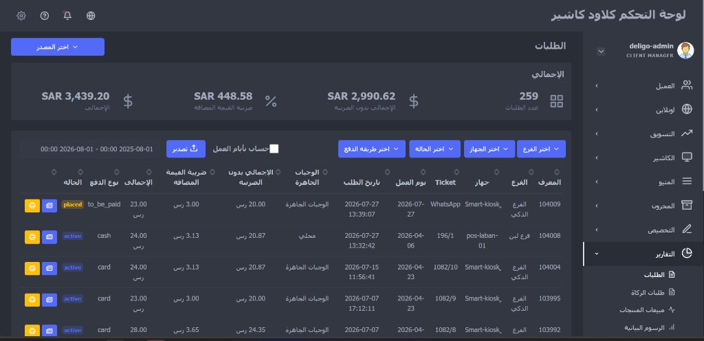
تقرير الطلبات مع الإجماليات والفلاتر وإجراءات التصدير.
10.2 مبيعات المنتجات
انتقل إلى التقارير ← مبيعات المنتجات. تعرض الصفحة شريط ملخص في الأعلى مع عدد المنتجات و عدد الفروع و إجمالي الكمية المباعة و إجمالي المبيعات.
يمكنك التصفية عبر اختر الفرع و حدد القسم و اختر المنتج، مع خيار حساب بأيام العمل. يظهر منتقي نطاق التاريخ وزر تصدير لتنزيل البيانات.
أعمدة الجدول: المعرف و المنتج و المرجع و القسم و الفرع و الكمية المباعة و سعر الوحدة و الإجمالي.
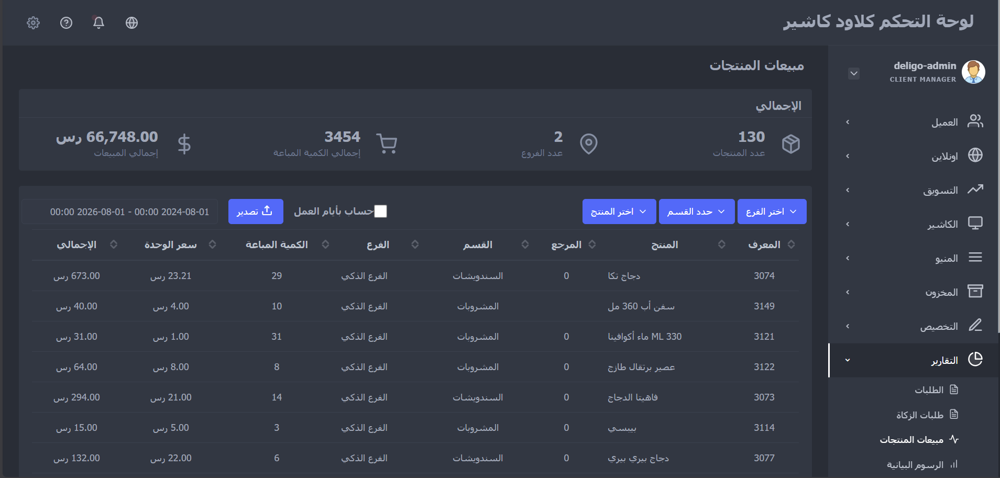
تقرير مبيعات المنتجات مع فلاتر الفرع والقسم والمنتج.
10.3 الرسوم البيانية
انتقل إلى التقارير ← الرسوم البيانية. تتيح الصفحة إنشاء تقارير مرئية تفاعلية لنطاق تاريخ محدد. في أعلى الصفحة، عيّن نطاق التاريخ باستخدام اختر نطاق تاريخ. توجد قوائم تصفية: اختر الفرع و اختر الجهاز و اختر المصدر، مع خيار حساب بأيام العمل. بعد الإعداد، انقر زر توليد الأخضر لعرض المخطط المحدد.
تشمل أنواع المخططات المتاحة: الإيرادات حسب الساعات/الأيام/الأشهر، عدد الطلبات حسب الساعات، متوسط مدة الطلب، الإيرادات حسب المنتجات/الخيارات/العروض/الأقسام/الفروع، وغيرها. بعد اختيار نوع مخطط والنقر على توليد، تحمّل الصفحة مخططاً تفاعلياً مع العنوان ونطاق التاريخ واسم الشركة في الرأس. يعيدك زر خلف إلى شاشة اختيار المخطط.
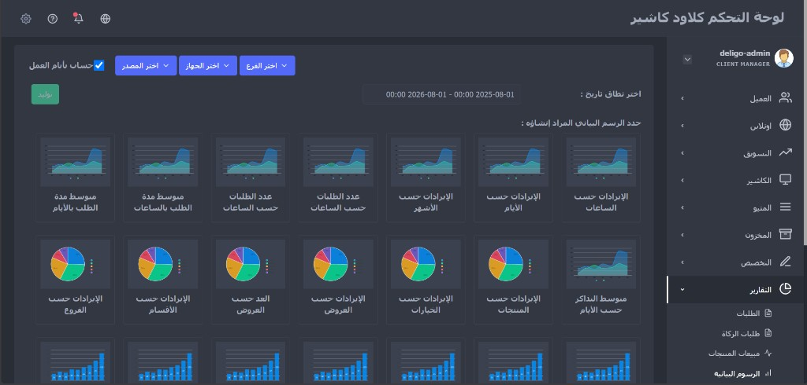
صفحة الرسوم البيانية قبل إنشاء تقرير مرئي.
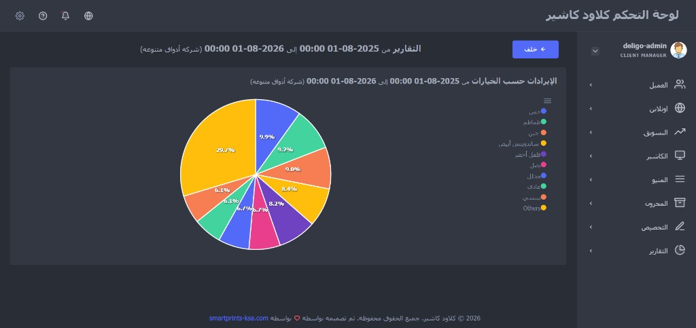
مخطط تفاعلي مُنشأ (مثال: الإيرادات حسب الخيارات) بعد اختيار الفلاتر ونطاق التاريخ.